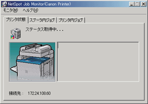

デバイスボードは、インストールしたデバイスの状態を一覧表示するためのソフトウェアです。印刷ジョブの一時停止、削除などが行えます。デバイスボードを起動するには、Windowsの［スタート］メニューから、［プログラム］－［NetSpot Job Monitor］－［NetSpot Job Monitorデバイスボード］を選択します。
デバイスボードの［オプション］－［デバイスボードの自動起動］をあらかじめ選択すると、コンピューターの起動時に自動的にデバイスボードが起動します。
デバイスボードの詳細は、ヘルプファイルを参照してください。ヘルプファイルは、デバイスボードの［ヘルプ］－［ヘルプ］を選択すると表示されます。
特定デバイスの詳細な状況を表示する（ステータスモニター）
ステータスモニターは、特定のデバイスの詳細な状況を確認するためのユーティリティーソフトウェアです。紙詰まりなどのエラーの表示や対処方法が表示されます。また、印刷ジョブの一時停止や削除、保存ジョブの印刷なども行えます。ステータスモニターを起動するには、デバイスボードで確認するデバイスを選択したあと、［オプション］－［モニタの起動］を選択します。
ステータスモニターの詳細は、ヘルプファイルを参照してください。ヘルプファイルは、ステータスモニターの［ヘルプ］－［ヘルプ］を選択すると表示されます。
各ページでの表示内容は、以下のとおりです。デバイスにより、表示されるページは異なります。

［プリンタ状態］ページ
デバイスの状態を示すアイコンやメッセージなどが表示されます。エラーの対処方法も表示されます。
［スプーラ内ジョブ］ページ
まだデバイスに送信されていないジョブ（コンピューター内のジョブ）やデバイスに送信されたジョブについての情報が表示されます。コンピューター内のジョブに対して、印刷処理の一時停止やジョブの削除も行えます。
［プリンタ内／ファクス内ジョブ］ページ
デバイス内にある送信されたジョブについての情報が表示されます。
［保存ジョブ］ページ
デバイスに保存されているジョブについての情報が表示されます。ここでは保存ジョブの印刷や削除、また部数や排紙先のジョブの属性変更も行うことができます。